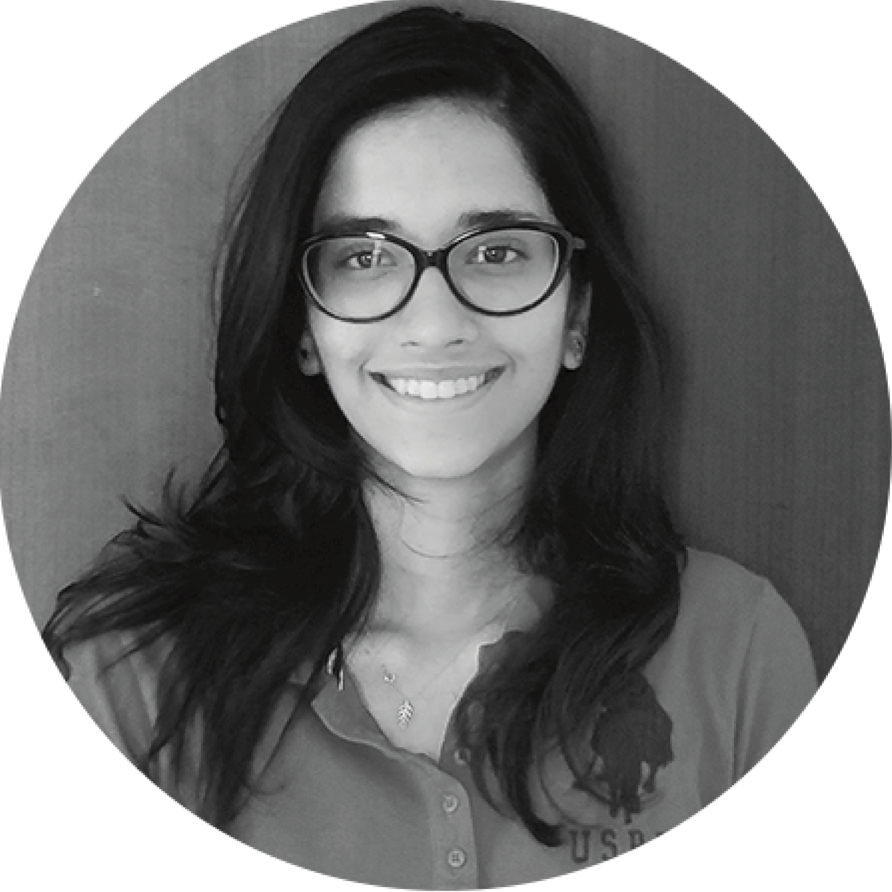
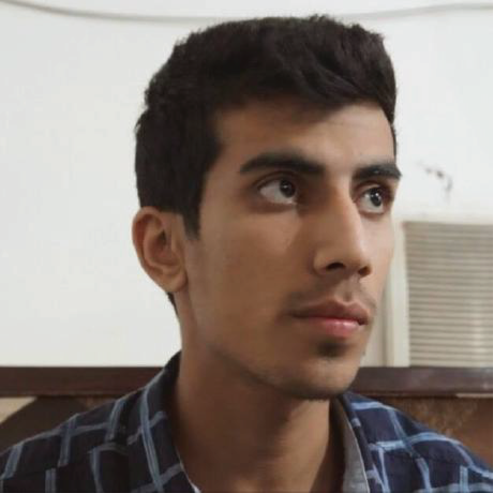
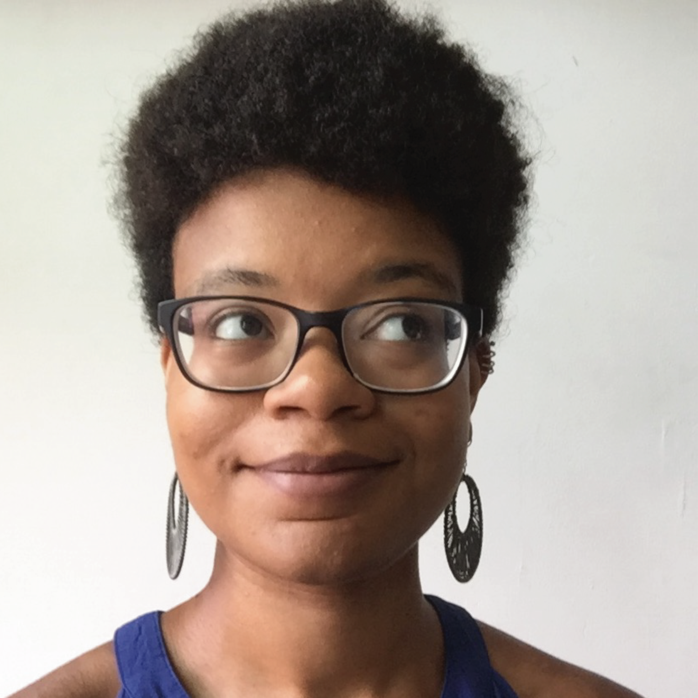
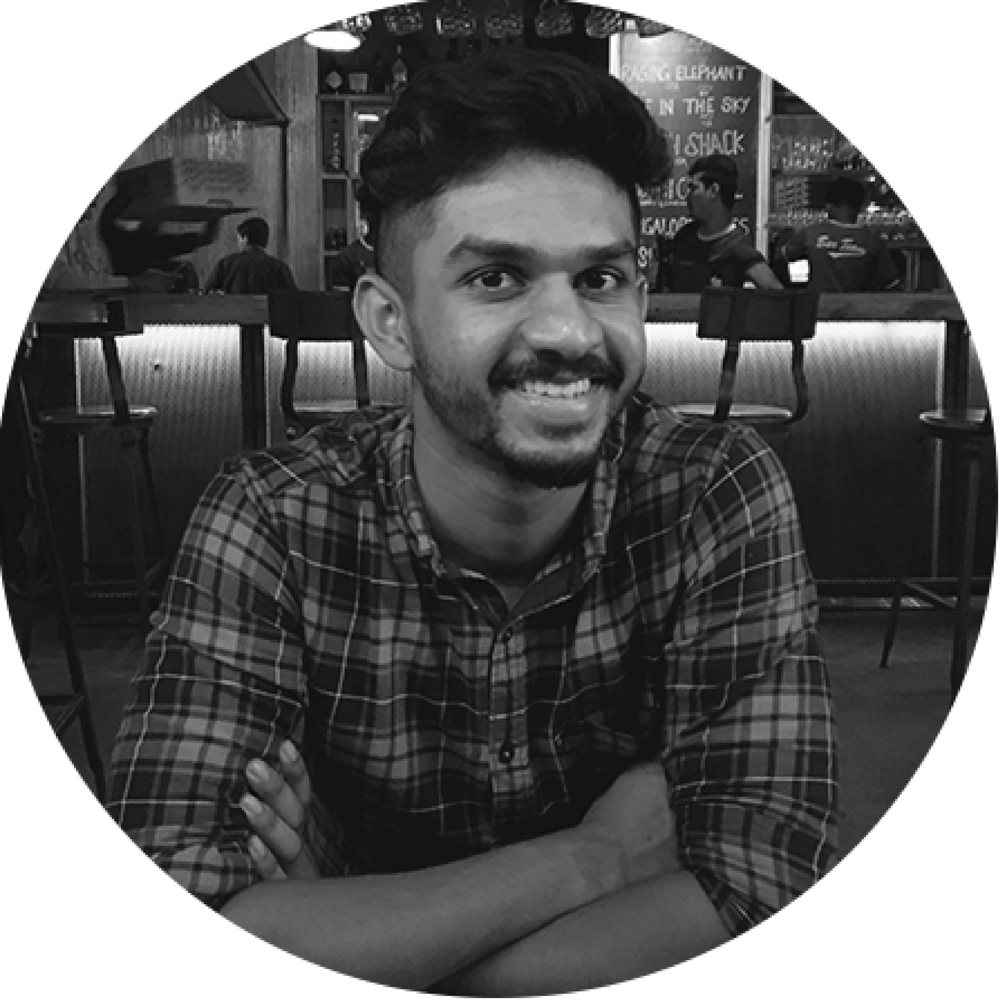
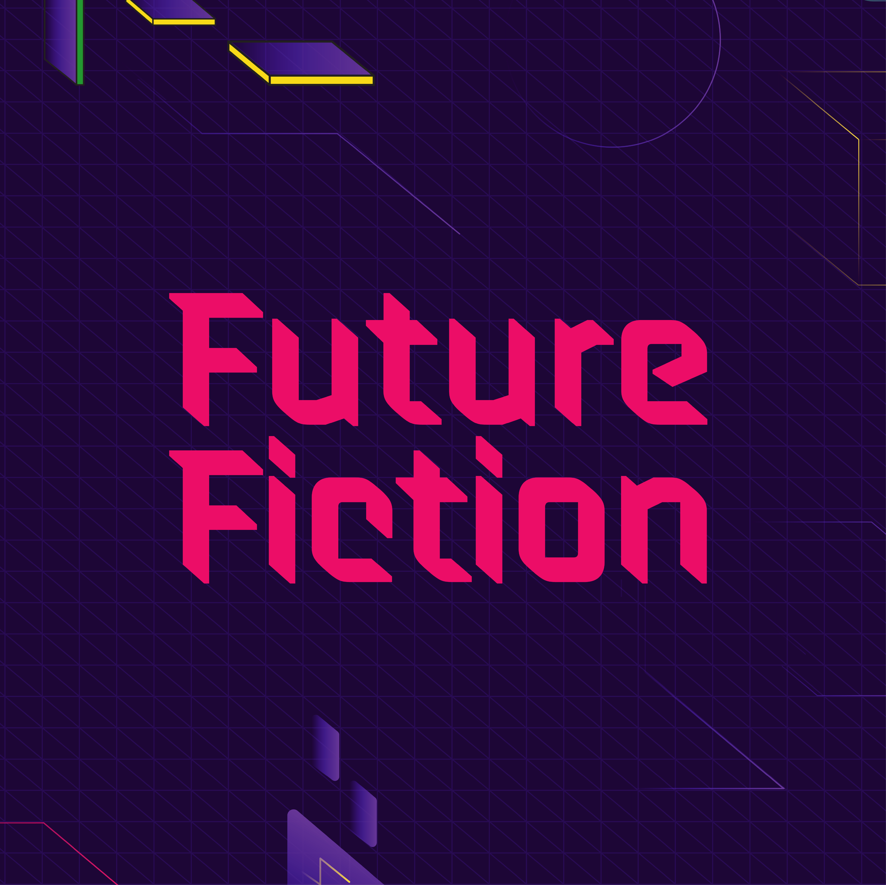

Click here to register for the event
Processing community day India has been created by and for the local communities in India
Processing Community Day (PCD) is a day to celebrate and explore art, code, and diversity around the world. We define the format of our event in any way that serves our local communities. What does that mean? - aside from the conventional lecture / demo format, our PCD can be a show & tell session, a zine-making session, an audio-visual performance, a DIY art show, a game jam, a group discussion on software art or ALL OF THE ABOVE.
Processing is a free and open-source software platform for learning how to code within the context of the visual arts, created by Casey Reas and Ben Fry. It is complemented by a web version, called p5.js, created by Lauren McCarthy. To date, Processing and p5.js are used by a worldwide community of artists, coders, educators, students.
A focus of this project is to make learning how to program and make creative work with code accessible to diverse communities, especially those who might not otherwise have access to these tools and resources. The first Processing Community Day (PCD), organized by Taeyoon Choi and the Processing Foundation in 2017 was one of our efforts to improve diversity within the art and programming community. Taking place at the MIT Media Lab, PCD 2017 drew community members from all over the east coast to get together in person to meet, share what they're working on, to learn, and collaborate.
Event Schedule
-
9:30 - 10:00
Registrations
-
10:15 - 10:30
Welcome!
-
10:30 - 11:45
Talks
- Mithru Vigneshwara - Beyond the Screen
- Tanvi Kumar - Stepping into the world of software through open source
- Hardik Chandrahas - Storytelling through creative coding
- Arjit Kapoor - Generative art and its principals.
- Lindsey Daniels - Empowering the self through code and technology
-
12:00 - 1:00
Workshops
- Rasagy Sharma - An Intro to Data Art - Bring your name, take back art!
- Rushali Paratey & Mathura Govindarajan - Introduction to ml5
-
1:00 - 2:00
Lunch + Project Showcase
-
2:00 - 3:00
Workshops
- Dominic Barrett - Using p5sound for musical performance and soundart
- Future Fiction - Generative Futures: Code through Composition ( An Introduction to concepts of Processing through visual composition)
-
3:00 - 3:30
Coffee Break + Networking
-
3:30 - 5:00
Talks
- Ashris Choudhury - Networks - making the invisible visible with p5js
- Usha Mohanraj - Anyone Can Code: Learning to code at 50
- Utsav Chadha - Existentialism + Software
- Samarth Gulati - Making a case for Generative Art
- Harshit Agrawal - Artificial Intelligence and Art
-
5:00 - 5:30
Community Activity
-
5:30 - 6:00
Community Photo
For any questions, email bangalore@processingindia.org
Speakers
-
Beyond the Screen

Mithru Vigneshwara is an explorer / dreamer who enjoys building physical tangible artifacts and devices. He is a research resident at the Interactive Telecommunications Program at New York University, where he focuses on developing assistive technology. Outside of machines, he likes goats, coconuts and ice cream.
-
Stepping into the world of software through open source
Tanvi Kumar is a 20 year old passionate programmer, currently doing her B.Tech at NIT Trichy. She grew up in the city of Chennai and can speak Hindi, Tamil and English. Most of her time is spent coding, reading about new things in software and listening to music. She loves trying new things and meeting new people.
-
Generative art and its principals
Arjit Kapoor is a multidisciplinary explorer who enjoys working beyond the boundaries of the discipline. His works deal with understanding complexity and modeling natural systems. With a degree in Mechanical Engineering, his works tend to reflect an interplay between natural and mechanistic. Arjit is currently working as an operational analyst for OYO Rooms.
-
Anyone Can Code: Learning to code at 50

Usha Mohanraj is a seasoned homemaker, a mother of two, and since 2016, a coder too. She grew up in Tamil Nadu, lived in Seattle for 10 years with her family, and now resides in Kerala with her husband and two dogs, Oreo and Kayal. She started learning p5.js in 2016. She creates sketches to practice her coding skills, channel her creativity, and even make the occasional birthday present.
-
Existentialism + Software

Utsav Chadha often finds himself solving absurd questions through experiments in new media. He recently graduated from NYU's Interactive Telecommunications Program, and is presently working as a full stack developer in the mental health space. He also believes that the existence of paav bhaji is no mere coincidence, and deserves more hype.
-
Empowering the self through code and technology
Lindsey Daniels is a freelance tinkerer and technologist living in NYC. With a background in fine art and a graduate of NYU's Interactive Telecommunications Program, she enjoys exploring ways to bring together new tech with traditional mediums in the physical world. Passionate about food, storytelling, and the benefits of play; also makes a great a cheesecake.
-
Artificial Intelligence and Art

Harshit Agrawal is a new media artist and human computer interaction (HCI) researcher. Through his artwork, he wants to create experiences for people to explore and express with seemingly distant technologies like artificial intelligence/ machine learning, drones, digital fabrication, sensors, augmented reality and in the process invite people to reflect upon and re-evaluate their relationship with technology. We live within a complex sphere of technical processes, and seldom do our experiences make us stop and come face to face with them, sit down and have a conversation with them, become comfortable with them to a level that we start reflecting on how they are truly affecting us and evolving our viewpoint of the world. As an artist, Harshit wants to create alternate lenses for looking at the influences that technology has on us. A lot of his current work focuses on the interplay between human and artificial intelligence, imagination and intention, spanning across virtual and physical embodiments. Harshit is a graduate of the MIT Media Lab and IIT Guwahati, both places which have helped him build and situate his practice as artistic, societal and technical enquiries.
-
Storytelling through creative coding
A former UX professional, Hardik Chandrahas is deeply interested in analyzing ideas from a data-driven perspective. Data Viz. and Algorithmic Art being his core interest areas, he finds joy in learning new approaches and methods to visualize the surround and self (be it personal activities or a topic of wider importance). He is currently pursuing his Masters in Information Design at NID Bengaluru. When not doing the above; he can be found cycling, brewing coffee, listening to podcasts and trying to sketch note his experiences.
-
Making a case for Generative Art

Samarth Gulati is an Experience Developer at Adobe, where he builds web based prototypes and visualizations for the Search and Sensei team. Outside of work he builds generative art snippets on CodePen and at times brings them to physical world using a plotter / 3D printer. He is also an avid listener of audiobooks, especially in cog-sci, and behavioral psychology genre.
-
Networks - making the invisible visible with p5js

"Hi Ashris Choudhury here. I like to make invisible things visible with data science and creative coding. I am passionate about the possibilities that emerge when contrasting ideas, people and fields collide to create totally new domains. Pursuing my bachelors degree in Architecture at the beautiful campus of IIT Kharagpur, I explored how computers can be taught what good design is. I have researched on emotion driven urban planning at ETH Zurich and AR based Educational Interface at MIT Media Lab. Processing has been a key component in my learning process and I would love to share the joy I found with many more learners.”
Workshops
-
An Intro to Data Art - Bring your name, take back art!

Rasagy Sharma is the Principal Designer at Gramener, and an aspiring data artist, who loves exploring the intersection of design, data and technology.
-
Using p5sound for musical performance and sound art

Dominic Barrett is a creative technologist who develops software, hardware, and conceptual tools for creators, artists, and performers. He is also a sound artist, teacher, and explores the poetics of our creative technology.
-
Programming Fundamentals, Concepts and Computational Power
Future Fiction is a new platform that addresses the future of Indian digital expressions. Through their events like ‘Eyemyth Media Arts Festival’, they bring together pioneering artists, performers and experts at the forefront of Immersive storytelling and New Media Arts. They have also been conducting workshops on creating interactive art experiences through AR, VR, Game Design and Creative Coding. Future Fiction is a project by Quicksand Design studio, a design and research consultancy based in New Delhi, Bangalore and Goa.
Organizing Team
-

Karthik Dondeti is a practicing architect and founder of Voxelscapes - an Architecture and Computational Design studio based in Bangalore. He holds a Bachelors Degree in Architecture from the School of Planning and Architecture, New Delhi and a Masters Degree focusing on Design and Technology from the Graduate School of Design at Harvard University. Karthik is passionate about operating at the intersection of the Digital and the Analogue and is currently working towards incorporating algorithmic design processes in the domains of Art and Architecture.
-

Mathura Govindarajan is a software engineer and creative technologist from Bangalore, India. She holds a Bachelors in Electronics Engg. and completed her Masters and Fellowship at New York University's Interactive Telecommunications program. She was also a Processing Fellow in 2018 and was part of a team that worked on making p5.js more accessible to users with low vision and blindness. Currently working on two education based startup in New York and Bangalore, she enjoys making educational experiences and tools for children and adults alike.
-

Rushali Paratey is an artist and engineer based in New York. She’s a Research Resident Fellow at New York University's Interactive Telecommunications program where she received her Masters. She is currently developing work that lies in the intersection of media arts and creative technology. She has a Bachelor's degree in Instrumentation Engineering from University of Mumbai and previously worked as a UX Designer for a crowdfunding platform - ketto.org.
This event is organised by individuals from Bangalore in collabaration with the Srishti ACM SIGCHI Chapter and hosted by Srishti Institute of Art, Design and Technology
Srishti Association of Computing Machinery (ACM) SIGCHI Chapter is a student body from Srishti Institute of Art, Design & Technology. They are a group of multi disciplinary individuals doing a monographic study in the realm of applying design principles and philosophies in the space of Human Computer Interaction. As a student chapter, they aim to provide seminars, lectures, learning forums and networking opportunities with peers and experts across the computing spectrum. They also make projects or write papers or find peers as per their interest within India and also from around the world.